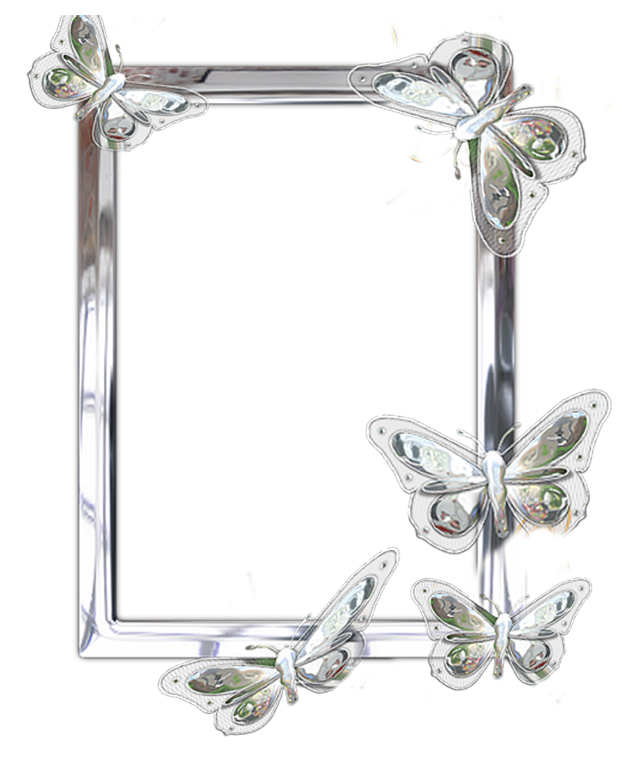

HFM = Hybrid Focusing Metric = the best metric ever
sharpness+compactness was the key so we did the math
wrote our own lovely algorithm
to estimate the correct sound speed combination for skin layers:
input: reconstructed image set I(x,y,c)
output: enhanced estimated image and sound speeds
1. reconstruct image I(x,y) of sound speeds c1,...cn.
2. compute sharpness value Fintensity ← I(x,y)
3. compute the normalized histogram of I(x,y)
4. compute mean intensities μc(k) μg(k)
by Otsu's method
5. compute the class variance σb2(k)
6. find K such that σb2(K) ← σb2(k) ∃ K ∈ [0, L]
7. if threshold number ≠ 1 then
K ← (K1 + K2 + ... + Kn) / n
end if
8. f(x, y) = 1 for I(x, y) ≥ K
f(x, y) = 0 for I(x, y) < K
9. FTPC ← sum f(x, y)
10. FHFM(c1,...,cn) = Fintensity / FTPC
11. return c1,...,cn ← max(F(c1,...,cn))
< < <go back
The main contribution I had on this project is simulating and analyzing data hence the discovery of this new metric as well as literature search.